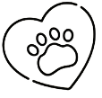
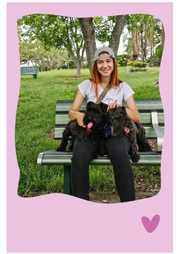
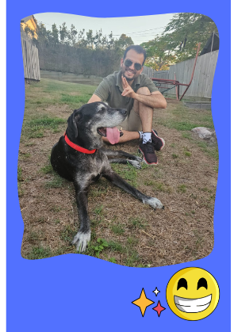

SOBRE NOSOTROS

Soy Alejandra
Trabajar con mascotas es una de las cosas que más disfruto en la vida. Cada animal tiene su propia personalidad, y me encanta crear un vínculo especial con ellos mientras me aseguro de que estén felices y bien cuidados. Para mí, el bienestar de las mascotas siempre será una prioridad , porque sé lo importante que son para sus familias.

Soy Andres
Siempre he tenido un amor especial por los animales, y trabajar con ellos me llena de satisfacción. Cuidarlos no solo es un compromiso, sino una oportunidad para ofrecerles atención, compañía y seguridad. Mi meta es hacer que tanto las mascotas como sus dueños se sientan tranquilos y confiados en mi trabajo.